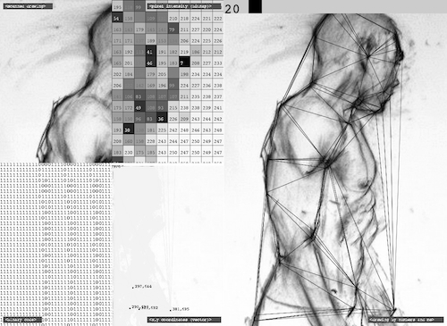
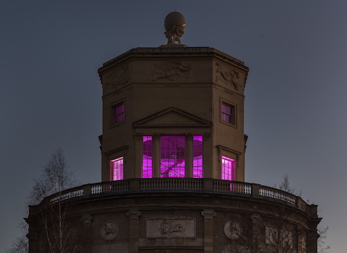
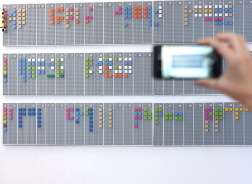
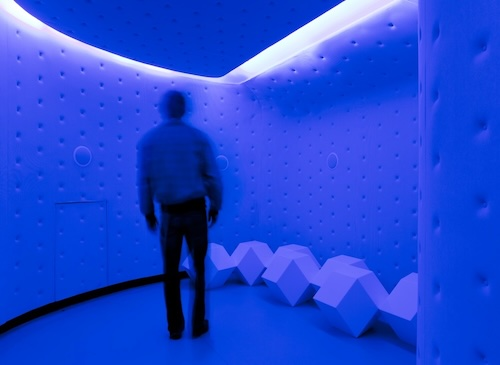

Drawing by Numbers
Working together with artist Julie Freeman I developed a piece of software which demonstrated the conversion process from an analogue life drawing to a digital drawing. It was created for the Drawing by Numbers workshop at the Media Space in the Science Museum, London, where participants could scan a recently completed life drawing for translation into a series of codes and images, and have it printed out. This piece was later invited to be exhibited at GV Art as part of the Automatic Art show.
Project info GV Art
Brighter Later
This project was part of Oxford University`s Radcliffe Observatory Quarter Public Art Programme and coincided with the city`s annual Christmas Light Festival. I worked together with Susan Collins and Matthew Jarvis to produce a temporary lighting installation for the Radcliffe Observatory at Green Templeton College. The work was informed by the site`s history and on-going role as a meteorological observation station. The light installation reacted in real time to data from a weather station such as wind speed, direction and temperature.
Project info
Bit Planner
A five-month Advanced Placement Project* with Special Projects, a design and invention studio based in London, resulted in a wall-mounted time planner that synchronises to a digital calendar. The Bit Planner was exhibited as one of the Designs of the Year 2014 at the Design Museum.
*Part of the Media & Arts Technology PhD Programme at Queen Mary University of London.
Project info
United Visual Artists, La Gaite Lyrique
United Visual Artists were commissioned to create interactive audio-visual installations and experiences throughout La Gaite Lyrique (Paris) for its opening week. Working with UVA and sound artist Scanner I developed a reactive audio-visual installation in the Chambre Sonore, a small room with multi-channel surround sound, ambient LEDs and floor-based touch sensitive sensors.
Project info